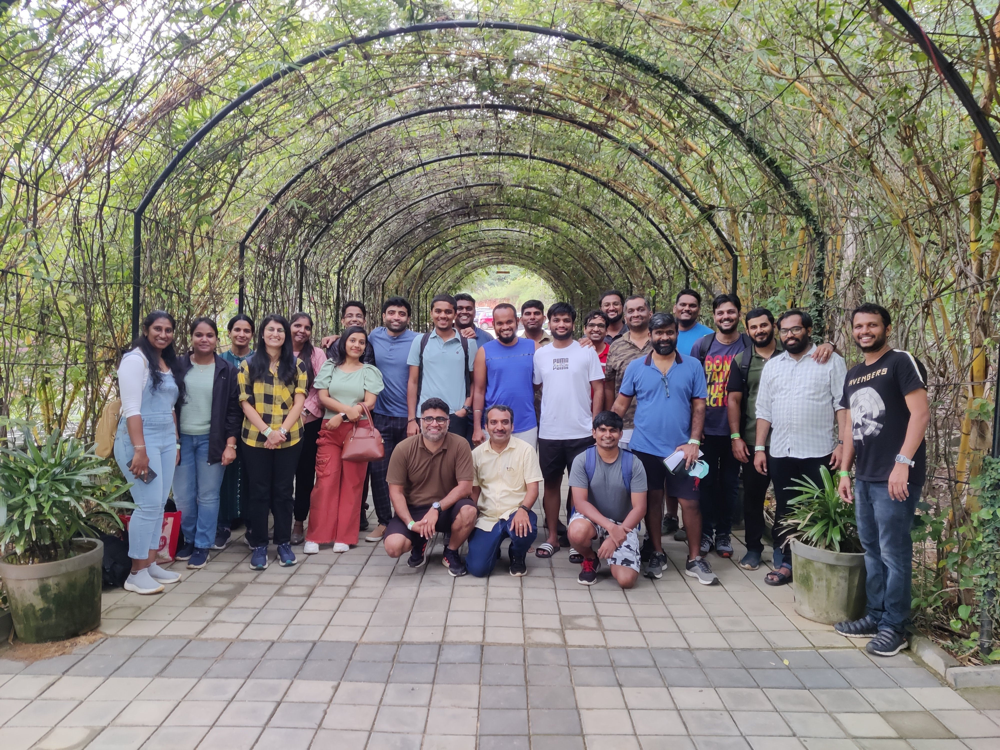
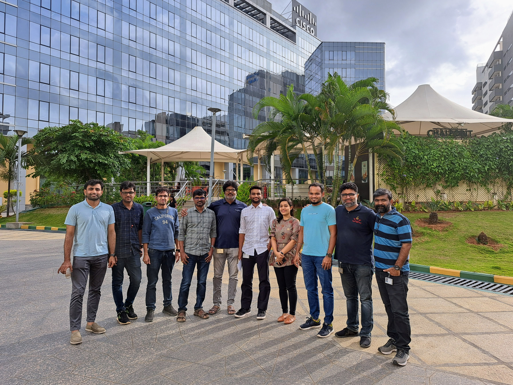

ResearchUniversity of UtahSpring 2024: CS6950 Independent StudyProf. Vijay Nagarajan
New distributed scheduler for disaggregated memory like CXL, RDMA, etc.
TeachingUniversity of UtahSpring 2024: CS4500 Senior Capstone DesignFall 2023: CS4000 Senior Capstone DesignProf. Jim de st Germain, Prof. David Bean, and Prof. Aaron Wood
Mentoring a class of 160 senior undergraduates in their project ideation, design,
development, and deployment.
Previous
Cisco Systems
Aug 2020 - July 2023
mutnawaz@cisco.com
3rd floor, BGL 17
Cessna Park, Bangalore, India
Software Engineer II
Engineered a diagnostic tool for Cisco servers, enabling troubleshooting of CPUs, DIMMs, &
PCIe devices. Achieved 40% reduction in downtime & 10% decrease in RMA costs, streamlining
debugging for TAC.
Designed a Data Sanitization framework & Redfish APIs to fully wipe data from storage
controllers, NVMe & disks.
Owned and revamped Cisco firmware application front-end with web components and integrated
12+ back-end APIs. Shipped the application in a customized Linux container, offering CLI,
UI, & Redfish REST APIs interfaces.
Implemented thread synchronization to concurrently install operating systems and update the
firmware of 100+ Cisco UCS servers at once.
Software Engineer
Worked on Baseboard Management Controller to streamline low-level firmware and BIOS update,
resulting in a 15% reduction in system downtime and improved system stability.
Migrate from legacy build systems to container-based CI/CD builds utilizing runC and
dockerd runtime engines, resulting in a notable 20% acceleration in build times.
Owned and maintained Cisco Inventory Portal by automating source check-ins, creating
SSH key-pairs, and optimizing large NFS storage, resulting in a 30% reduction in
storage & 2x API performance.

Cisco First Team Outing. Aug 26, 2022.

Cisco Last Working Day. Jul 20, 2023.
InternshipsCisco Systems
Jan 2020 - Jun 2020
mutnawaz@cisco.com
Software Engineer Intern
Developed 3 new industry-standard Redfish APIs for firmware discovery, update, & monitoring.
Ported 7,000+ source code from Python2 to Python3 with no performance impact.